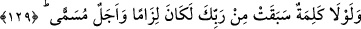
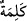
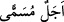

kavminin beldeleri gibi geçmiş nesilleri helâk edişimiz onları yola getirmedi mi?
Halbuki onlar Şam’a giderken onların yurtlarından geçerler ve onların helâkinin
eserlerini görürler. Bu ise onların Hakk’ı bulmalarını ve onların başına inen belâların
benzerinin kendi başlarına gelmemesi için ibret almalarını gerekli kılan hususlardandır.
“Bunda,” yani onların azâb ile helâk edilmesinde “elbette ki” çirkinlikleri
yasaklayan “akıl sahipleri için nice” hidâyeti açık, hakka delâleti zâhir pek çok
“ibretler vardır.” Şu halde bu misâl, bir hidâyet vesîlesidir, hem de ne hidâyet vesilesi!
Mesnevî’de der ki:
Şu halde bizden de Allâh’a şükürler olsun ki,
Bizi ancak helâk olanlardan sonra dünyaya getirdi.
Bu sûretle Hakk’ı ve nasıl helâk ettiğini duyduk.
Geçmiş zamanlarda gelip geçen kavimleri
O kurtların kemiklerini, tüylerini apaçık görün de
Bu halden ibret alın, ey ulular!
Akıllı, bu varlığı, bu kibir ve gururu terk eder;
Çünkü Fir’avn’un halini hatıra getirir.
Eğer ululanmayı bırakmaz, ibret almazsa
Onun azgınlığından başkaları ibret alır!
129. Eğer Rabbinden, daha önce sâdır olmuş bir söz ve tâyin edilmiş bir vâde
olmasaydı, (ceza onlar için de dünyada) kaçınılmaz olurdu.
“Eğer Rabbinden,” onu gerektiren bir hikmet sebebiyle bu ümmetin, yâni ümmet-i
dâvetin azâbının âhirete erteleneceğine dair “daha önce sâdır olmuş” önceden
söylenmiş “bir söz ve tâyin edilmiş bir vâde” onların ömürleri ve azâb edilmeleri için
belirlenmiş bir süre (ecel-i müsemmâ) -ki bu süre kıyâmet günü veya Bedir günüdür-
“olmasaydı,” işledikleri suçların cezası bu kâfirler için de dünyada “kaçınılmaz
olurdu.” Önceki yalanlayan toplumların başına geldiği gibi suçlarından bir saat bile
geriye kalmazdı.
Âyette geçen “söz”, Allâh’ın ‘Muhammed ümmeti (âyetlerimi) yalanlasalar da
(onların cezâsı) âhirete te’hir olunacak ve önceki ümmetler gibi tamamen yok
edilmeyeceklerdir.’ diye meleklerine bildirmesi ve levh-i mahfûzda yazmasıdır. Çünkü
Allah, onların içinden îman edenlerin olacağını bilmektedir. Eğer onlara bir azâb
indirilseydi, helâk hepsine umûmî olurdu.
Âyette “__WORD__ (söz)” ile “
/tâyin edilmiş bir vâde” ifâdesinin birbirinden
ayrılması, onlardan her birinin bu ümmetin azâbının geciktirilme gerekçesi olarak